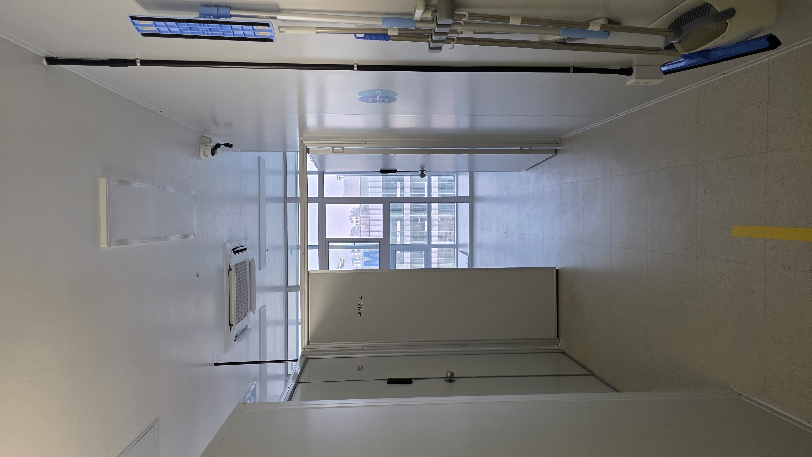
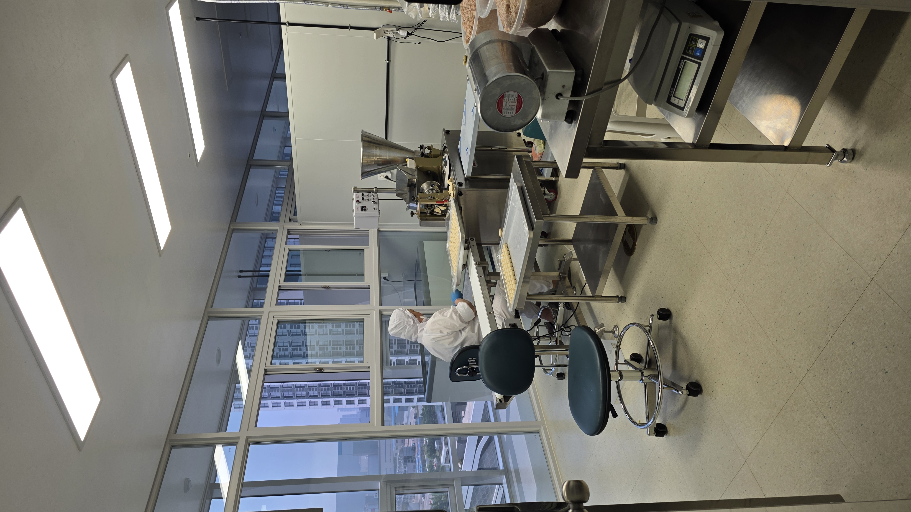
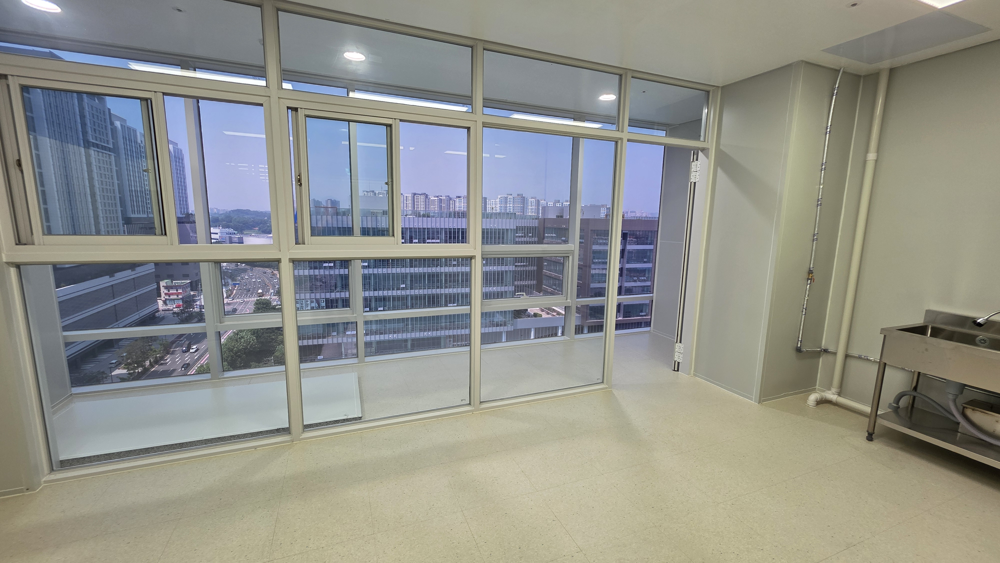
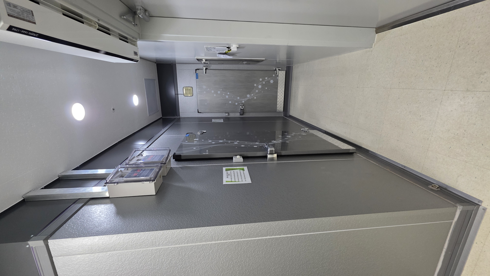
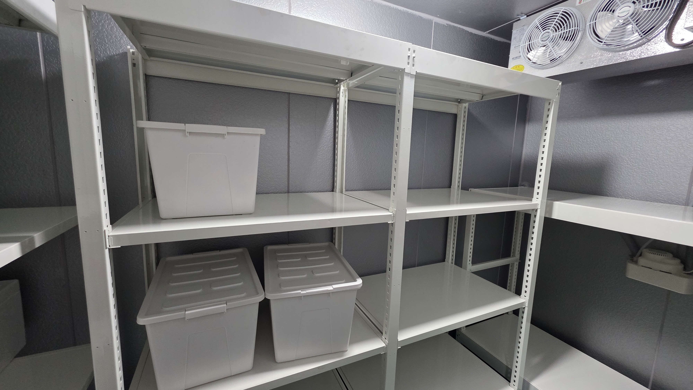

생산실 복도
 POST HACCPHACCP 인증 준비 및 입점 상담
POST HACCPHACCP 인증 준비 및 입점 상담
PYEONGTAEK BRANCH
생산실과 냉동창고, 내부 동선을 갖춘 공유형 제조시설입니다. 실제 시설 사진을 먼저 확인하고 내 품목의 입점 가능 여부를 상담해보세요.
PYEONGTAEK FACILITY
생산실 복도부터 실제 작업 중인 생산실, 냉동창고와 내부 보관 공간까지 확인할 수 있습니다.





실제 생산 설비를 갖춘 공간으로, 품목과 공정에 따라 입점 가능 여부를 먼저 검토합니다.
냉동창고와 내부 보관 공간을 갖추고 있어 원부자재와 제품 보관 방향을 함께 확인할 수 있습니다.
생산 품목, 공정 특성, 희망 일정, HACCP 인증 필요 여부를 알려주시면 준비 방향을 먼저 안내해드립니다.
NEXT STEP
상세 위치와 입점 가능 여부는 품목과 생산 계획을 기준으로 상담을 통해 안내해드립니다.